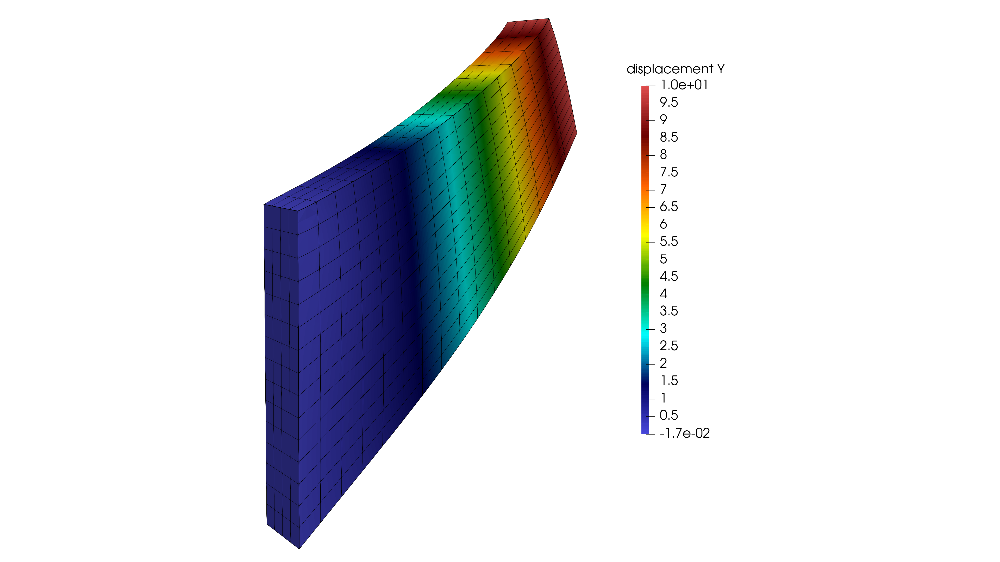

Balance of linear momentum in the reference configuration
\[
-\operatorname{Div}\mathbf{P}(\mathbf{F})=\mathbf{0}
\quad\text{in }\Omega_0,
\qquad \mathbf{F}=\mathbf{I}+\nabla_0\mathbf{u}.
\]
Solid Mechanics / Elastic / Hyperelasticity
A displacement-only nonlinear solid benchmark. The page separates the theoretical formulation from the simulation workflow, while keeping the actual implementation excerpts close to the input files.

Left boundary fixed; right boundary prescribed displacement u_y = 10t. E = 200, nu = 0.3; final load parameter t = 1.
Theory
The hyperelastic model is state-based: once the displacement field defines the deformation gradient, the stress follows from the strain-energy density. The element weak form is then written once as a scalar statement and differentiated by AD to obtain residual and tangent.
The fixed and loaded boundary groups and their actual values are defined by input/BC.txt.
The displacement field is interpolated from the element DOFs. At every Gauss point, the reference gradient of the displacement defines the finite-strain deformation gradient.
Young’s modulus and Poisson’s ratio are read from
Material.txt
and converted to Lamé
parameters before evaluating the stress response.
For this example, the material file uses
youngs_modulus 200
and
poisson_ratio 0.3
.
Because the weak form is integrated over the reference domain, the implementation uses the first Piola-Kirchhoff stress.
This is the central programming idea: the model declares the local weak-form contribution, while the global assembly and solver remain independent of the material model.
The virtual displacement variables are AD variables, so each element residual entry is read from the derivative of the scalar weak-form expression.
The current displacement DOFs are wrapped by an outer AD type, which gives the Newton tangent from the same implementation used to compute the residual.
Equation-to-code mapping
| Mathematical quantity | Meaning | Code identifier | Source function |
|---|---|---|---|
| \(\mathbf{u}\) | Displacement | displacement | make_hyperelastic_layout |
| \(\mathbf{F}\) | Deformation gradient | F | weak_scalar_hyperelastic_solid |
| \(\nabla_0\delta\mathbf{u}\) | Virtual-displacement gradient | deltaF | weak_scalar_hyperelastic_solid |
| \(\mathbf{P}\) | First Piola stress | P3 | weak_scalar_hyperelastic_solid |
| \(G_e\) | Scalar element weak form | G | weak_scalar_hyperelastic_solid |
DIRICHLET displacement LEFT ux 0.0
DIRICHLET displacement LEFT uy 0.0
DIRICHLET displacement LEFT uz 0.0
DIRICHLET displacement RIGHT uy 10*tyoungs_modulus 200
poisson_ratio 0.3field_key displacementsolver_backend umfpack
dt 0.25
total_time 1.0
adaptive_dt onSimulation
The simulation tab focuses on how the formulation is used in the code. The visible snippets are intentionally short: they show the actual computational pattern without turning the documentation page into a full source listing.
DOFS_info.txt
declares
field_key displacement
, so only displacement unknowns enter the global vector.
Material.txt
provides
youngs_modulus
and
poisson_ratio
, which are converted to Lamé parameters.
The element routine computes
F = I + Grad(u)
from the current element displacement DOFs.
The helper differentiates the Neo-Hookean energy with respect to the 3D deformation gradient.
The weak form is accumulated locally and differentiated by AD to produce
ElementSystem
.
The generic assembly path scatters the dense element residual and tangent into the global CSR system.
These snippets mirror the actual C++ structure: field declaration, deformation-gradient helper, energy-gradient evaluation, local weak-form loop, and AD extraction.
std::vector<std::string> active_constitutive_field_names(const FieldMesh& mesh) {
(void)mesh;
// This constitutive kernel is a pure solid displacement formulation.
// Even if DOFS_info.txt still lists velocity/pressure for compatibility,
// only displacement is assembled by this weak form.
return {"displacement"};
}static Scalar weak_scalar_hyperelastic_solid(
const FieldMesh& mesh,
int elem_id,
const std::vector<Scalar>& x_elem,
const std::vector<Scalar>& test_elem,
const ProblemParameters& params,
const ElementState& state
) {
(void)state;
const HyperElasticLocalLayout L = make_hyperelastic_layout(mesh, elem_id);
const auto& U = L.field("displacement");
if (static_cast<int>(x_elem.size()) != L.n_local()) {
throw std::runtime_error("Bad current element vector size in hyper-elastic solid weak form.");
}
if (test_elem.size() != x_elem.size()) {
throw std::runtime_error("Bad test element vector size in hyper-elastic solid weak form.");
}
Scalar G(0.0);
// Geometry and interpolation are taken from the displacement field.
const ElementGeometry geom = make_displacement_element_geometry(mesh, elem_id);
const double E = params.material.youngs_modulus;
const double nu = params.material.poisson_ratio;
for (const auto& gp : gauss_rule(U.element_type, params.solver.gauss_order)) {
const ShapeData su = compute_shape(U.element_type, gp.xi, gp.eta, gp.zeta);
const JacobianData Jgeo = compute_jacobian_data(geom, su);
if (Jgeo.detJ <= 0.0) {
throw std::runtime_error("Negative reference detJ in hyper-elastic solid element.");
}
const auto dNu = compute_dN_dx(su, Jgeo);
const double dV = Jgeo.detJ * gp.weight;
// Kinematics at this Gauss point. F is built from the displacement field; in
// 2D it is embedded into 3D plane strain before material evaluation.
const auto F = hpx::deformation_gradient_as<Scalar>(L, x_elem, dNu);
const auto deltaF = hpx::field_grad_as<Scalar>(L, "displacement", test_elem, dNu);
// G = int P : deltaF dV. In 2D plane strain, only the 2x2 in-plane
// block contributes, so seed four constitutive AD variables instead of
// a full embedded 3x3 tensor.
if (L.dim == 2) {
const auto F2 = to_fixed_tensor2<Scalar, 2, 2>(F, "F2");
const auto P2 = hpx::grad(
[&](const auto& F_ad) {
return hpx::neo_hookean_energy_young(F_ad, E, nu);
},
F2
);
for (int i = 0; i < 2; ++i) {
for (int A = 0; A < 2; ++A) {
G += P2[i][A] * deltaF[i][A] * Scalar(dV);
}
}
} else {
const auto F3_vec = hpx::embed_plane_strain_3d(F, L.dim);
const auto F3 = to_fixed_tensor2<Scalar, 3, 3>(F3_vec, "F3");
const auto P3 = hpx::grad(
[&](const auto& F_ad) {
return hpx::neo_hookean_energy_young(F_ad, E, nu);
},
F3
);
for (int i = 0; i < L.dim; ++i) {
for (int A = 0; A < L.dim; ++A) {
G += P3[i][A] * deltaF[i][A] * Scalar(dV);
}
}
}
}
return G;
}ElementSystem compute_constitutive_element_system(
const FieldMesh& mesh,
int elem_id,
const Vector& x_elem,
const ProblemParameters& params,
const ElementState& state
) {
return hpx::scalar_weak_form_element_system(
x_elem,
[&](const auto& x_ad, const auto& test_ad) {
return weak_scalar_hyperelastic_solid(mesh, elem_id, x_ad, test_ad, params, state);
}
);
}Build and run
make -C FEM MODEL_SRC=../Web/examples/hyperelastic-3d/weak_form_hyper_elastic_ad.cpp
cd FEM
OMP_NUM_THREADS=2 ./bin/fem ../Web/examples/hyperelastic-3d/input/ProblemMesh.txt ../Web/examples/hyperelastic-3d/input/Material.txt ../Web/examples/hyperelastic-3d/input/BC.txt ../Web/examples/hyperelastic-3d/input/Solver.txt ../Web/examples/hyperelastic-3d/input/Postprocessing.txt ../Web/examples/hyperelastic-3d/input/DOFS_info.txtDownload input files
These files are included in the website package under
examples/hyperelastic-3d/input/
.
3D Cook’s membrane displacement mesh, 3D solid element rows, and LEFT/RIGHT boundary groups.
dofs
Declares the active unknown field with
field_key displacement
.
Fixes the left boundary and applies the time-dependent right-side prescribed vertical displacement.
material
Defines
youngs_modulus 200
and
poisson_ratio 0.3
.
Controls Gauss order, backend, Newton tolerances, adaptive dt, and diagnostics.
outputControls output directory, output name, VTK cadence, force toggle, and minJ CSV path.
modelAnnotated hyperelastic weak-form implementation used by the example.